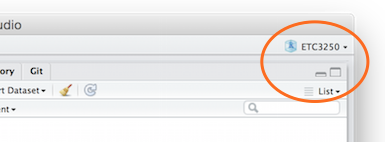

The versions of the software that we will use are:
- RStudio 0.99.465 – © 2009-2015 RStudio, Inc.
- R 3.2.1 (2015-06-18) – "World-Famous Astronaut"
Resource: Garret Grolemund's book "Hands-On Programming with R"
July 27, 2015
The versions of the software that we will use are:
Resource: Garret Grolemund's book "Hands-On Programming with R"
R is a language for data analysis, encouraging:
Learning a new language can be frustrating. It is worth it!
The RStudio GUI makes working with R easier.
Sometimes you may get unexpected error messages like:
Error in file(file, "rt") : cannot open the connection
which indicates that R might disagree with you on where think you are working. These commands can help locate what R thinks, and change it, getwd() and setwd("labs")
Also, note that the name of the current project can be seen at the top right of the RStudio window.
One of the main strengths of R is the package system. These go beyond the base R tools, and provide access to methodology from many fields of study. These packages are contributed by people across the globe, usually experts in their field. Because there are so many, you will likely only need a handful for your own analyses. Learn how to install these, and load them as you need.
# library() makes a package available for use
library(ggplot2)
library(tidyr)
library(dplyr)
# If you're missing any of these packages you can
# install with
# install.packages(c("ggplot2", "tidyr", "dplyr"))
# You only need to inst# all once per computer.
# You need to library() every time you start R.
pisa <- read.csv("PISA-oz.csv", stringsAsFactors=FALSE)
dim(pisa)
## [1] 14481 80
colnames(pisa)
## [1] "name" "SCHOOLID" "ST03Q01" "ST03Q02" "ST04Q01" "ST08Q01" ## [7] "ST09Q01" "ST115Q01" "ST11Q01" "ST11Q02" "ST11Q03" "ST11Q04" ## [13] "ST11Q05" "ST11Q06" "ST13Q01" "ST17Q01" "ST27Q01" "ST27Q02" ## [19] "ST27Q03" "ST27Q04" "ST27Q05" "ST28Q01" "ST85Q01" "ST85Q02" ## [25] "IC05Q01" "IC06Q01" "IC07Q01" "IC08Q03" "IC08Q04" "IC08Q05" ## [31] "PV1MATH" "PV2MATH" "PV3MATH" "PV4MATH" "PV5MATH" "PV1MACC" ## [37] "PV2MACC" "PV3MACC" "PV4MACC" "PV5MACC" "PV1MACQ" "PV2MACQ" ## [43] "PV3MACQ" "PV4MACQ" "PV5MACQ" "PV1MACS" "PV2MACS" "PV3MACS" ## [49] "PV4MACS" "PV5MACS" "PV1MACU" "PV2MACU" "PV3MACU" "PV4MACU" ## [55] "PV5MACU" "PV1MAPE" "PV2MAPE" "PV3MAPE" "PV4MAPE" "PV5MAPE" ## [61] "PV1MAPF" "PV2MAPF" "PV3MAPF" "PV4MAPF" "PV5MAPF" "PV1MAPI" ## [67] "PV2MAPI" "PV3MAPI" "PV4MAPI" "PV5MAPI" "PV1READ" "PV2READ" ## [73] "PV3READ" "PV4READ" "PV5READ" "PV1SCIE" "PV2SCIE" "PV3SCIE" ## [79] "PV4SCIE" "PV5SCIE"
What does the stringsAsFactors do?
How can you see what's in this data frame?
Using code:
View(pisa)
str(pisa)
head(pisa)
What do chr, int, num and POSIXct stand for?
| Abbreviation | Meaning |
|---|---|
int |
Integer |
num |
Numeric |
chr |
Character |
POSIXct (don't ask) |
Date/time |
Factor use sparingly |
Categorical |
Which columns of pisa are numeric?
Which columns are character?
How many different schools were sampled?
summary(pisa$PV2MATH)
## Min. 1st Qu. Median Mean 3rd Qu. Max. ## 107.0 425.5 491.7 493.3 561.2 853.2
length(unique(pisa$SCHOOLID))
## [1] 775
1+1 2*5 12/4 20-3 100:110 # All integers from 100 to 110
## [1] 2 ## [1] 10 ## [1] 3 ## [1] 17 ## [1] 100 101 102 103 104 105 106 107 108 109 110
If you type a command that R doesn't recognize you will get an error, eg.
> 5 % 3
Error: unexpected input in "5 % 3"
R objects store data. The assignment operator, <- is used to name the object. It is also possible to use = to mean the same thing.
mynumbers <- 5:12 mynumbers mynumbers + 2
## [1] 5 6 7 8 9 10 11 12 ## [1] 7 8 9 10 11 12 13 14
Names can be almost anything, except for special characters ^, !, $, @, +, -, /, *. It is good practice to name your objects with some meaning for what they contain, be reasonably short (less typiing). They should from common R functions, for example, don't use data because it is also used to load stored data from packages, or c because this is an R function that allows you to collect a bunch of objects together. You won't get errors by using these names but you may get confused when you come back and look at your code later.
Objects can be of different types. The object mynumbers is a vector of numbers. Numbers can be various types also: integer or double.
typeof(mynumbers) is.numeric(mynumbers) is.vector(mynumbers) length(mynumbers)
## [1] "integer" ## [1] TRUE ## [1] TRUE ## [1] 8
Other common types of objects for data analysis are characters, logicals, factors, dates. Factors store categorical data. Dates have a special format that enables it to be treated similarly to how we use dates in real life.
mytext <- c("hello", "class")
length(mytext)
mylogic <- c(TRUE, FALSE, TRUE, TRUE)
gender <- factor(c("male", "female", "female", "female", "male"))
levels(gender)
summary(gender)
## [1] 2 ## [1] "female" "male" ## female male ## 3 2
There are basic routines for handling dates specially, but the best package for operating on temporal data is lubridate, we'll talking about this later.
now <- Sys.time()
now
typeof(now)
class(now)
today <- as.Date("08/26/2014", format="%m/%d/%Y")
today
## [1] "2015-07-13 12:30:49 CDT" ## [1] "double" ## [1] "POSIXct" "POSIXt" ## [1] "2014-08-26"
One of the powerful aspects of R is to build on the reproducibility. If you are going to do the same analysis over and over again, compile these operations into a function that you can then apply to different data sets.
mymode <- function(x) {
ux <- unique(x)
ux[which.max(tabulate(match(x, ux)))]
}
mymode(c(rep("A", 5), rep("B", 3)))
## [1] "A"
mymode <- function(x, labelit="m") ....
x is an input to the function that is essential to provide each time.
label is an optional addition that mostly will be the default value, but the user could change it to something else, simply by changing it in the function on the fly.
mymode(x=c(rep("A", 5), rep("B", 3)))
mymode(x=c(rep("A", 5), rep("B", 3)), labelit="mode")
## m ## "A" ## mode ## "A"